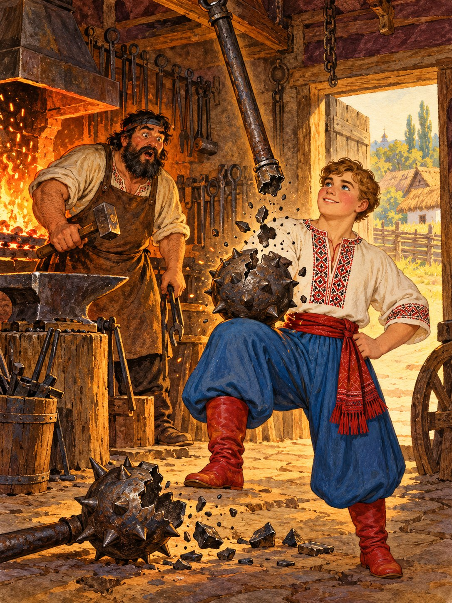

Пішов Котигорошко до коваля й попросив скувати йому булаву на сім пудів. Коваль працював цілий день, і булава вийшла важка та блискуча.
Котигорошко підкинув її так високо, що вона зникла за хмарами, а сам ліг відпочити. Минуло дванадцять днів, і булава з гуркотом полетіла вниз. Він підставив коліно, і вона розлетілася надвоє.
— Слабка, — сказав богатир. — Скуй мені міцнішу.
Коваль зібрав усе залізо, яке мав, і скував булаву на дванадцять пудів. Ця вже витримала.
